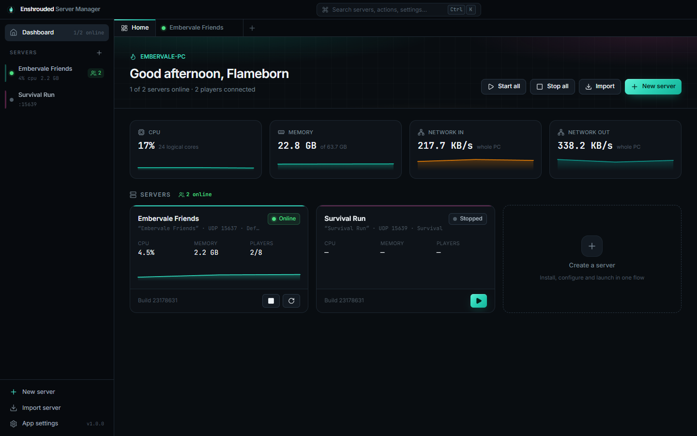

Built against the real dedicated server
Every behaviour was checked on enshrouded_server.exe itself – its config format, its validation rules, its log, its saves and how it shuts down – so the manager does what the server actually does.
One-click servers
A wizard picks a free port, creates roles with strong passwords, chooses a difficulty and downloads the server through SteamCMD – no Steam login.
Difficulty editor
Keen’s presets as cards, or Custom with all 37 gameplay settings as percentages and minutes – not nanoseconds. Changes are marked and resettable.
Roles & passwords
Admin, Friend, Guest, Visitor, Builder, Moderator. Permission toggles, reserved slots, invite text – and the server’s own rules checked live, so it never refuses your config.
Real player tracking
Live count straight from the server (Steam query), names and role from the log, session history with play time, and the ban list with one-click unban.
Worlds & rollback
Roll back to any of the game’s rolling autosaves after griefing, export, start fresh – or bring your single-player world to the server.
Backups that verify
Interval, on-stop and pre-update zip backups with retention, safe restore (quarantine first), integrity checks and portable server packs.
Performance & history
Live CPU, memory, disk, network and per-core charts, plus 24 h / 7 d / 30 d history of players and resources and an activity timeline.
Hands-off automation
Crash recovery, schedules, auto-update that waits for players to leave, stop when empty, start with Windows, tray mode, toasts and Discord webhooks.
Get found, get in
One-click UPnP, firewall fixes (even the hidden Block rules), double-NAT/CGNAT detection and a check that Steam really lists your server.
Fast, dark and pretty
Tabs for every server, Ctrl+K for everything, and a save bar that never lets an edit get lost.

Online in five steps
About a minute of clicking plus a ~4 GB download.
Install
Run the installer. SmartScreen may warn (not code-signed yet): More info → Run anyway.
New server
Name it, pick a difficulty, keep the generated role passwords.
Start
Wait for the download, press Start – online in seconds.
Open the door
Port Forwarding → Forward automatically and allow the firewall.
Invite
Friends open Play → Join, search your server name and enter their role password.
Requirements
| Windows | 10 or 11, 64-bit (WebView2 is built in) |
| Disk | ~9 GB per server |
| Memory | 8 GB for a few friends, 16 GB for 16 players |
| Network | UDP 15637 (one port per server) |
Build from source
# Node 22+, Rust (MSVC) npm install npm run tauri dev # app with hot reload npm run dev # UI only, mock backend npm run build:all # installer + MSI + portable
Contributors and AI agents: start with AGENTS.md – architecture and every verified fact about the server.
Light the Flame for your friends.
Free, open source, and made for hosts who’d rather play than edit config files.